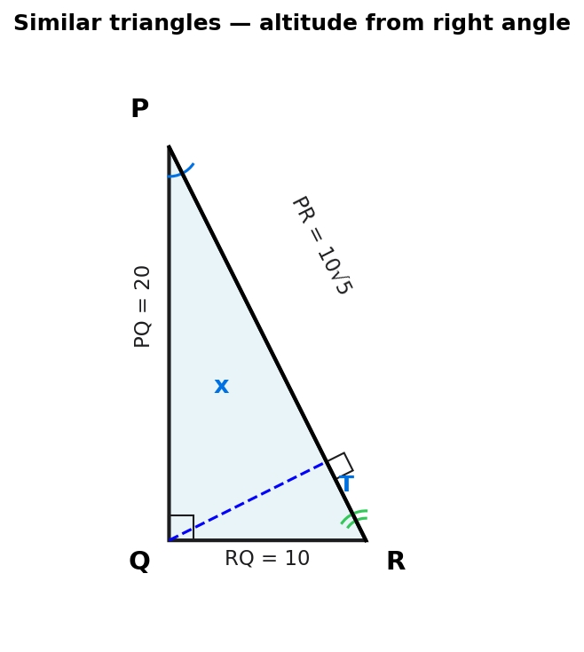

In a right-angled triangle PQR, the hypotenuse is the side PR. The length of side PQ is 20 cm and the ratio RQ : PQ is 1 : 2.
What is the length of the perpendicular from the hypotenuse to the point Q?

[4 marks] · Options: A) $8/\sqrt{5}$ B) $10\sqrt{2}$ C) $2\sqrt{5}$ D) $5\sqrt{2}$ E) $4\sqrt{5}$
Strategy. Use Pythagoras on the right-angle triangle PQR to find the hypotenuse PR.
Pythagoras
$$PR^2 = PQ^2 + RQ^2 = 20^2 + 10^2 = 400 + 100 = 500$$ $$PR = \sqrt{500} = \sqrt{100 \times 5} = 10\sqrt{5}$$Strategy. Dropping an altitude from the right-angle vertex to the hypotenuse creates two sub-triangles, each similar to the original.
Triangle $PQR \sim$ triangle $QTR \sim$ triangle $PTQ$ (AA similarity: shared angle at P; both have a right angle).
Strategy. The scale factor from the large triangle to the sub-triangle is $\div\sqrt{5}$. Or use the two-area trick (faster).
Method A: Similarity ratio
$$x = \frac{PQ \cdot RQ}{PR} = \frac{20 \times 10}{10\sqrt{5}} = \frac{20}{\sqrt{5}}$$Method B: Two-area trick (faster)
$$\text{Area} = \tfrac{1}{2}\cdot 20\cdot 10 = \tfrac{1}{2}\cdot 10\sqrt{5}\cdot x$$ $$5\sqrt{5}\cdot x = 100 \quad\Rightarrow\quad x = \frac{20}{\sqrt{5}}$$Strategy. ESAT answer options have surds in the numerator, not the denominator. Always rationalise before scanning options.
Rationalise
$$\frac{20}{\sqrt{5}} \cdot \frac{\sqrt{5}}{\sqrt{5}} = \frac{20\sqrt{5}}{5} = 4\sqrt{5}$$Sticky note from Harry: "Rationalise the denominator" — a key ESAT technique. $20/\sqrt{5}$ is numerically correct but NOT in the answer list; you MUST rationalise to match option E.